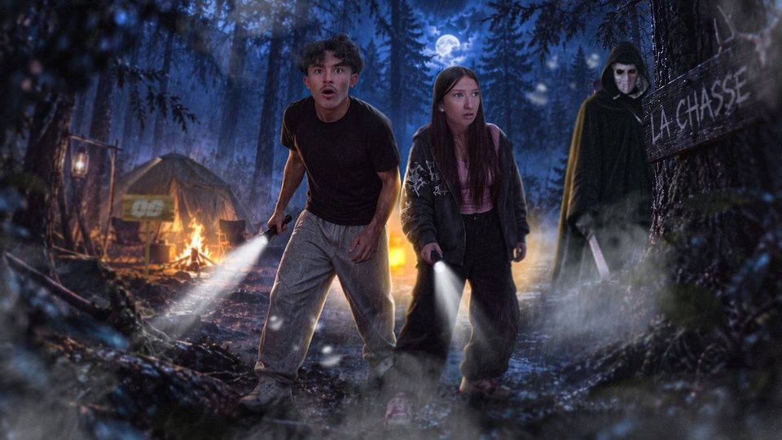

YouTube · Timiz · 23 sept. 2026
Une nuit pour survivre en forêt
Vidéo de Timiz avec Kiproco. Je l'ai coécrite, puis j'ai été assistant caméra et assistant monteur.
- Rôle
- Coscénariste, assistant monteur
- Chaîne
- Timiz
- Avec
- Kiproco